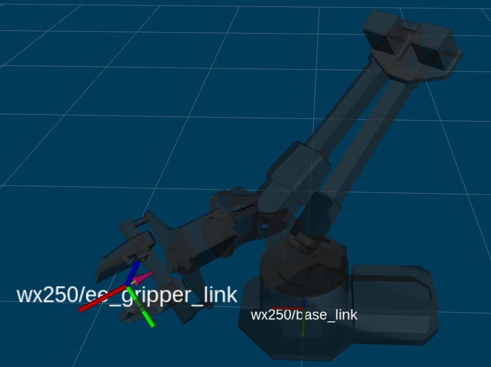

Python-ROS Interface
Note
The Interbotix Python-ROS Interface requires that the ROS Interface has already been installed.
For usage and structure information on the Python interface that builds on top of ROS, check out the Python Demos for ROS 1 or the Python Demos for ROS 2 pages. Further documentation of the Python API’s functionality can be found on this page. Note that you can check the source code methods’ docstrings for information on each method.
Attention
The Python-ROS API is not compatible with Gazebo-simulation robots.
Terminology
Transforms
- Body Frame
- The frame at /<robot_name>/ee_gripper_link
- Space Frame
- The frame at /<robot_name>/base_link
- T_sb
- End-effector poses are specified from the Body Frame to the Space Frame. In the code documentation, this transform is knows as T_sb (i.e. the transform that specifies the Body Frame \(b\) in terms of the Space Frame \(s\)). In the image above, you can see both of these frames. The X axes are in red, the Y axes are in green, and the Z axes are in blue. The rotation and translation information is stored in a homogeneous transformation matrix.
In a homogeneous transformation matrix, the first three rows and three columns \(R\) define a 3-dimensional rotation matrix that describes the orientation of the Body Frame with respect to the Space Frame. The first three rows and the fourth column \(p\) of the matrix represent the translational position (i.e. xyz) of the Body Frame with respect to the Space Frame. The fourth row of the matrix is always [0 0 0 1] for matrix multiplication purposes.
You will see two other homogeneous transformation matrices in the code:
- T_sd
- Defines the desired end-effector pose with respect to the Space Frame. This
transformation is used in methods like
set_ee_pose_matrix, where a single desired pose is to be solved for. - T_sy
- The transform from the Space Frame to a virtual frame with the exact same x, y, z,
roll, and pitch as the Space Frame. However, it contains the ‘yaw’ of the
Body Frame. Thus, if the end-effector is located at xyz = [0.2, 0.2, 0.2] with
respect to the Space Frame, this converts to xyz = [0.2828, 0, 0.2] with respect to
the virtual frame of the T_sy transformation. This convention helps simplify how
you think about the relative movement of the end-effector. The method
set_ee_cartesian_trajectoryuses T_sy to command relative movement of the end-effector using the end-effector’s yaw as a basis for its frame of reference.
Timing Parameters
The Python API uses five different timing parameters to shape the time profile of movements.
The first two parameters are used to determine the time profile of the arm when completing moves
from one pose to another. These can be set in the constructor of the object, or by using the
set_trajectory_time method.
- moving_time
- Duration in seconds it should take for all joints in the arm to complete one move.
- accel_time
- Duration in seconds it should take for all joints in the arm to accelerate/decelerate to/from max speed.
The other three parameters are used to define the time profile of waypoints within a trajectory.
These are used in functions that build trajectories consisting of a series of waypoints such as
set_ee_cartesian_trajectory.
- wp_moving_time
- Duration in seconds that each waypoint in the trajectory should move.
- wp_accel_time
- Duration in seconds that each waypoint in the trajectory should be accelerating/decelerating (must be equal to or less than half of wp_moving_time).
- wp_period
- Duration in seconds between each waypoint.
Functions
set_ee_pose_matrix
set_ee_pose_matrix allows the user to specify a desired pose in the form of the homogeneous
transformation matrix, T_sd. This method attempts to solve the inverse kinematics of the
arm for the desired pose. If a solution is not found, the method returns False. If the IK
problem is solved successfully, each joint’s limits are checked against the IK solver’s output. If
the solution is valid, the list of joint positions is returned. Otherwise, False is returned.
Warning
If an IK solution is found, the method will always return it even if it exceeds joint limits
and returns False. Make sure to take this behavior into account when writing your own
scripts.
set_ee_pose_components
Some users prefer not to think in terms of transformation or rotation matrices. That’s where the
set_ee_pose_components method comes in handy. In this method, you define T_sd in terms
of the components it represents - specifically the x, y, z, roll, pitch, and yaw of the Body
Frame with respect to the Space Frame (where x, y, and z are in meters, and roll, pitch
and yaw are in radians).
Note
If using an arm with less than 6dof, the ‘yaw’ parameter, even if specified, will always be ignored.
set_ee_cartesian_trajectory
When specifying a desired pose using the methods mentioned above, your arm will its end-effector to
the desired pose in a curved path. This makes it difficult to perform movements that are
‘orientation-sensitive’ (like carrying a small cup of water without spilling). To get around this,
the set_ee_cartesian_trajectory method is provided. This method defines a trajectory using a
series of waypoints that the end-effector should follow as it travels from its current pose to the
desired pose such that it moves in a straight line. The number of waypoints generated depends on
the duration of the trajectory (a.k.a moving_time), along with the period of time between
waypoints (a.k.a wp_period). For example, if the whole trajectory should take 2 seconds and
the waypoint period is 0.05 seconds, there will be a total of 2/0.05 = 40 waypoints. Besides for
these method arguments, there is also wp_moving_time and wp_accel_time.
Respectively, these parameters refer to the duration of time it should take for the arm joints to
go from one waypoint to the next, and the time it should spend accelerating while doing so.
Together, they help to perform smoothing on the trajectory. If the values are too small, the joints
will do a good job following the waypoints but the motion might be very jerky. If the values are
too large, the motion will be very smooth, but the joints will not do a good job following the
waypoints.
This method accepts relative values only. So if the end-effector is located at xyz = [0.2, 0, 0.2], and then the method is called with ‘z=0.3’ as the argument, the new pose will be xyz = [0.2, 0, 0.5].
End-effector poses are defined with respect to the virtual frame T_sy as defined above. If you want the end-effector to move 0.3 meters along the X-axis of T_sy, I can call the method with ‘x=0.3’ as the argument, and it will move to xyz = [0.5828, 0, 0.2] with respect to T_sy. This way, you only have to think in 1 dimension. However, if the end-effector poses were defined in the Space Frame, then relative poses would have to be 2 dimensional. For example, the pose equivalent to the one above with respect to the Space Frame would have to be defined as xyz = [0.412, 0.412, 0.2].
Tips & Best Practices
Control Sequence
The recommended way to control an arm through a series of movements from its Sleep pose is as follows:
- Command the arm to go to its Home pose or any end-effector pose where ‘y’ is defined as 0 (so that the upper-arm link moves out of its cradle).
- Command the waist joint until the end-effector is pointing in the desired direction.
- Command poses to the end-effector using the
set_ee_cartesian_trajectorymethod as many times as necessary to do a task (pick, place, etc…). - Repeat the above two steps as necessary.
- Command the arm to its Home pose.
- Command the arm to its Sleep pose.
You can refer to the bartender script to see the above method put into action.
Miscellaneous Tips
Note
If using a 6dof arm, it is also possible to use the set_ee_cartesian_trajectory method to
move the end-effector along the ‘Y-axis’ of T_sy or to perform ‘yaw’ motion.
Note
Some functions allow you to provide a custom_guess parameter to the IK solver. If you know where the arm should be close to in terms of joint positions, providing the solver with them will allow it to find the solution faster, more robustly, and avoid joint flips.
Warning
The end-effector should not be pitched past +/- 89 degrees as that can lead to unintended movements.
Troubleshooting
The robot ‘robot_name’ is not discoverable. Did you enter the right robot_model?
The robot 'robot_name' is not discoverable. Did you enter the right robot_model?
This error means that essential ROS services can’t be found under the ‘robot_name’ namespace. Check that the robot name given to your robot and the xsarm_control robot_model/robot_name parameter match and that the xs_sdk node launched successfully.